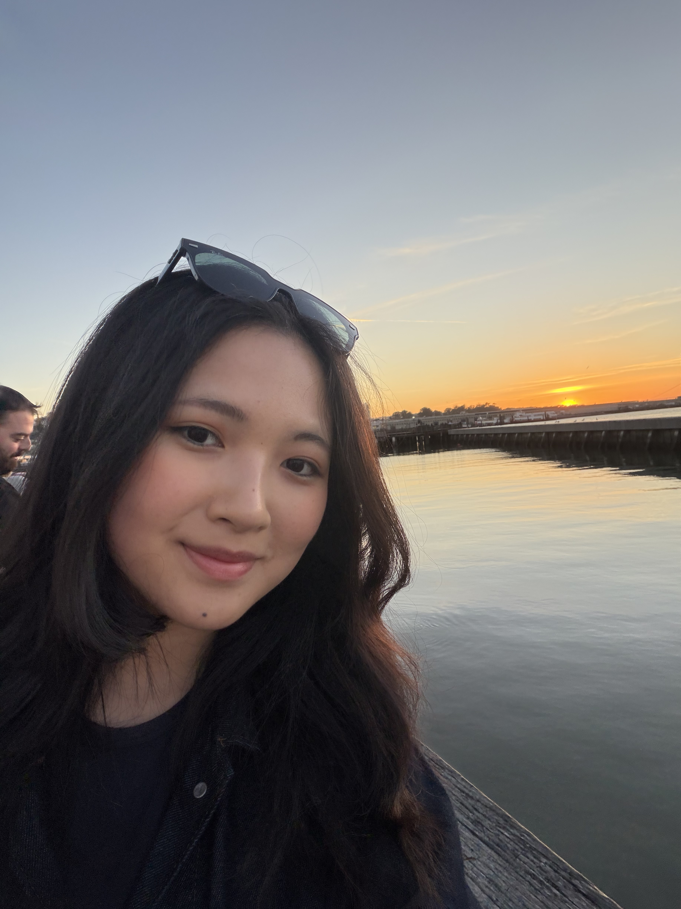

builder. creator. connector.
CS junior at UMich building AI products that ship and grow. I'm drawn to the intersection of technical craft and creative thinking — making things that work beautifully and reach people.

Real-time home repair assistant that sees what you see. Three-stage LLM pipeline — Gemini 2.0 Flash for visual analysis, two Llama 3.3 70B models via Groq for reasoning and step-by-step repair plans. FAISS vector search grounds every instruction in source material.
AI community Q&A platform that stops duplicate questions before they happen. Semantic search with FastEmbed matches new queries to existing threads at 92%+ accuracy. Full-stack: React, Gemini API, PostgreSQL with optimized indexing.
Nutrition tracking app for UMich dining halls — actively used by 100+ students every day. Built the backend: Node.js ETL pipeline processing 10,000+ data points from the MDining dataset, real-time nutrition updates, 99.7% uptime across a full academic semester.
Grew @derryfield.robotics from 200 to 1,000+ followers through strategic content — a viral video broke into the robotics community and compounded. Applied the same instincts to my personal account: travel, ideas, everything that makes me me.
I'm originally from Cambodia — I've been in the US for about 6–7 years, living in Massachusetts, New Hampshire, and now Michigan. First-gen international student. Transferred to UMich from UMass Lowell, graduating May 2027.
I've always been more on the creative side. I like connecting with people, spreading ideas, and building things that do both. Growth engineering sits right at that intersection — technical craft with real human reach.
Outside of building: I read classic novels, and I do at least one solo travel trip a year. Traveling alone keeps me observant, present, and better at collaborating when I come back.